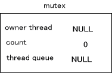
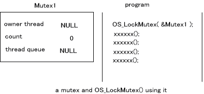
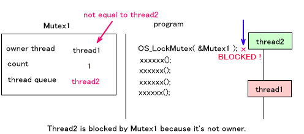
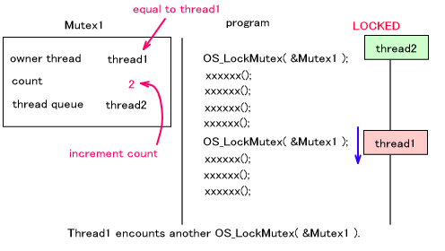
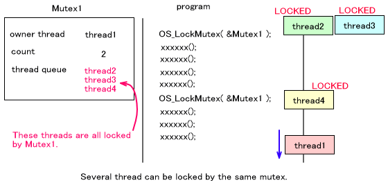
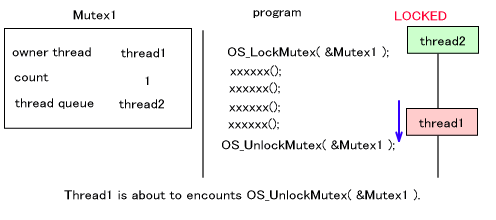
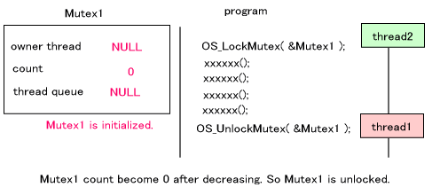
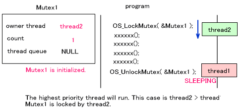
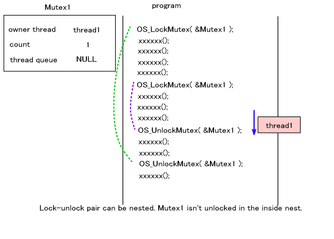

mutex (ミューテック、mutual exclusion (service) ) は、スレッド間の排他制御のための機構です。プログラムの特定の個所について複数のスレッドからの同時実行を抑制し、データやレジスタなどのリソースが同時に複数のスレッドからアクセスされないようにします。
mutex の初期化
mutex の初期化は OS_InitMutex() で行ないます。 1つの OSMutex 構造体のオブジェクトに1つの mutex を設定することが出来ます。
mutex の構造
OSMutex 構造体は、
struct OSMutex
{
OSThreadQueue queue;
OSThread* thread; // the current owner
s32 count; // lock count
OSMutex* prev; // link for OSThread.queueMutex
OSMutex* next; // link for OSThread.queueMutex
};
|
となっています。このうち、prev と next は mutex をリスト構造で管理するためのメンバで、実質的に
mutex の機能を為すものは queue と thread と count です。
queue は、この mutex によって待たされているスレッドが登録されるスレッドキューです。
thread は、この mutex で他のスレッドをロックしているカレントスレッドを登録するメンバです。
count は、この mutex に対するロックのネストを管理するメンバです。
Mutex を初期化したとき、各メンバは以下の値になっています。

mutex のロック
mutex による ロックを行なう関数は OS_LockMutex() です。
プログラムのある個所に OS_LockMutex() を記述すると、指定したmutex がその時点でロックに使用されていない場合、カレントスレッドを記憶してロックをかけます。
すでにロックされている mutex を指定した OS_LockMutex() が実行されると、mutex が現在のスレッドと同じスレッドによってロックされている場合は
mutex の count をインクリメントした上で関数から戻り、異なるスレッドであった場合はロックが解除されるまで現在のスレッドは一時停止状態になります。このときスレッドのリスケジューリングが発生します。
例えば、下図のように Mutex1 と、それを使ってロックをかけるプログラムがある場合を考えます。

このプログラムを thread1 が実行しようとします。thread1 は mutex のロック関数
OS_LockMutex( &Mutex1 ) を実行しますが、Mutex1 はこの時点でまだ使われていないので ( 使われていないという判断は
Mutex1 の owner thread が NULL であることを利用しています。)、 thread1
が Mutex1 の owner thread であることを記憶し、count を 1 にしてロック関数から戻ります。
ここで別のスレッド thread2 が同じプログラムを実行しようとした場合を考えます。thread2
も OS_LockMutex( &Mutex1 ) を実行しますが、Mutex1 はすでにロックに使用されています。Mutex1 の owner
thread は thread2 ではないので thread2 はここから先に進むことが出来ません。結果、thread2
は一時停止状態に入ります。この時、Mutex1 内の thread queue にこのロックの解除を待っているスレッドとして、
thread2 を登録しておきます。

一方、therad1 が再びどこかの(同じ行であっても、別の行であっても) OS_LockMutex( &Mutex1 ) を実行する場合を考えます。Mutex1 はすでにロックに使用されていますが Mutex1 の
owner thread は現在のスレッド thread1 と等しいので、そのまま通過することが出来ます。この時
Mutex1 内の count をインクリメントします。

なお、複数のスレッドが一つの mutex の thread queue に登録されることもあります。これらはすべてその mutex によってロックされているスレッドです。すべてのスレッドが同じ行で一時停止状態になっているとは限りません。mutex のロックが解除されると、登録されている全てのスレッドは実行可能状態になります。

mutex のロックの解放
mutex による ロックを解放する関数は OS_UnlockMutex()です。
ただし、必ず解放するわけではなく、mutex 内部の count 値をデクリメントした結果が 0 であるときのみロックを解放します。0 でない場合は、count 値をデクリメントするのみで関数から戻ります。
例えば、下図のように thread1 が Mutex1 を用いて thread2 をロックしている状態で、thread1
が OS_UnlockMutex( &Mutex1 ) を実行する場合を考えます。

この時、count をデクリメントした結果0 となるので、thread queue に登録されているスレッドを実行可能状態にしてリスケジューリングします。この場合 thread2 が実行可能状態になります。

もしも thread2 が thread1 より優先度の高いスレッドであれば、thread1 が一時停止状態となって、
thread2 が実行状態となります。thread2 は OS_LockMutex( &Mutex1 ) を実行しようとして thread1 にロックされていたのですが、Mutex1 は初期化されていますので、今度は
thread2 が Mutex1 を用いて他のスレッドをロックすることになります。

thread1 が OS_UnlockMutex() を実行して、count 値をデクリメントしても 0 でない場合はまだ他のロックが解除されていないものと考え、そのままスルーします。この時はスレッドのリスケジューリングは発生しません。このように、ロックとロックの解放はネスト(入れ子)構造になっていても構いません。

mutex のロック試行
OS_LockMutex() はロック出来るまで関数から戻りませんが、それに対し、ロックできればするが出来なければすぐに戻るという関数が
OS_TryLockMutex() です。
OS_TryLockMutex() は、その返り値によりロックに成功したかどうかを知ることが出来ます。
スレッド終了時の処理
スレッドが終了するときは、そのスレッドがロックしていた mutex はすべて解放されます。
2004/12/14 用語や語尾など修正
2004/11/11 初版